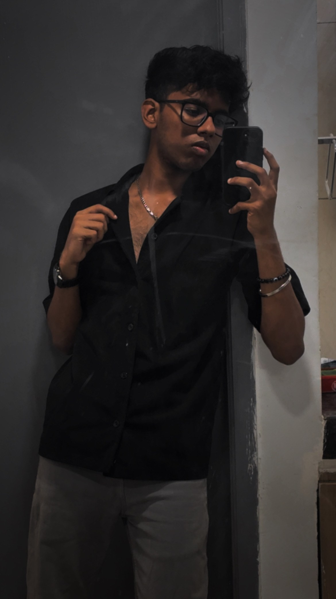
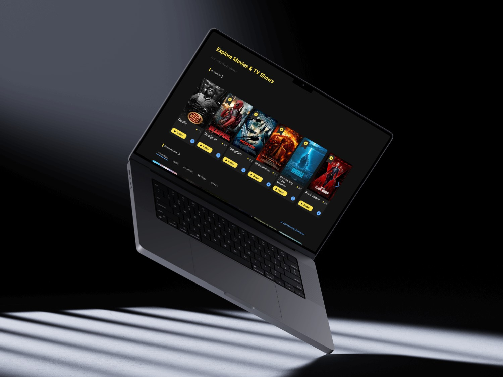
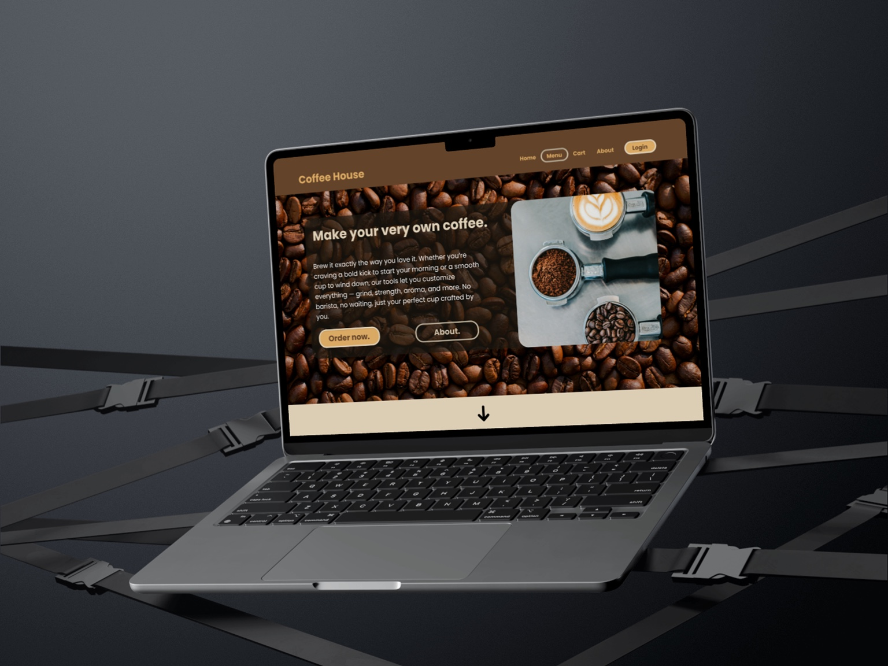

ADITYA ARUL MANALAN

Visual UI
Case Studies
CLEAR FLOWS ✦ STRONG HIERARCHY ✦ INTERACTION DETAILS ✦ CASE STUDIES WITH STRUCTURE ✦ VISUAL UI THAT FEELS INTENTIONAL ✦
03 / Selected WorkSELECTED
SELECTED
WORK
Three case studies shown as editorial project posters: large imagery, controlled typography, smooth scroll movement, and clear recruiter-friendly storytelling behind the visuals.

001 / Desktop UXIMDb
IMDB
REDESIGN
Entertainment discovery redesign with cleaner hierarchy and faster decision-making.

002 / MobileHostel Utility
Ping
My
Room
One-tap hostel cleaning request flow built around speed and status clarity.

003 / Landing PageCoffee House
Coffee
House
A warm landing page that makes product exploration feel natural, not forced.
04 / Resume
Download PDF
DownloadResume
05 / CapabilitiesDESIGN
DESIGN
RANGE
The focus is visual UI, layout, hierarchy, interaction states, and turning raw project ideas into polished portfolio stories.